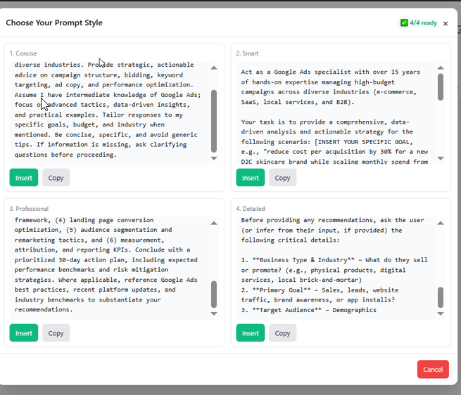

Write it your way
Start with the messy, half-formed version. Thats the point.
The prompt power-up for your browser
Prompt Master turns half-formed thoughts into clear, high-performing prompts right where you already chat with AI.
Free to use Your keys stay on your device
make a plan for launching my newsletter
Act as a growth strategist. Create a 30-day launch plan for a weekly newsletter about design systems for startup teams. Include channels, weekly goals, and 3 measurable success metrics.
Prompt better wherever you work
A better starting point
Prompt Master gives your ideas the structure they need to go further without taking over your voice.
Start with the messy, half-formed version. Thats the point.
One click adds context, role, constraints, and the right level of detail.
Use the optimized prompt, compare variations, and keep the best one.
Built for momentum
Everything you need to get useful answers on the first try built right into your browser.
Turn a vague request into a thoughtful brief in seconds, with six optimization styles to match the task.
See two or four variations side-by-side before you commit.
Bring your OpenAI, Gemini, DeepSeek, or Moonshot key. Stored locally.
Use the keyboard shortcut or click the sparkle wherever you write: chat, email, or docs.
CTRL + SHIFT + OOne extension. Every conversation.
Prompt Master meets you in the tools you already use, so better thinking is always one click away.
Ready when you are
Install Prompt Master and make your first rough prompt your last rough prompt.